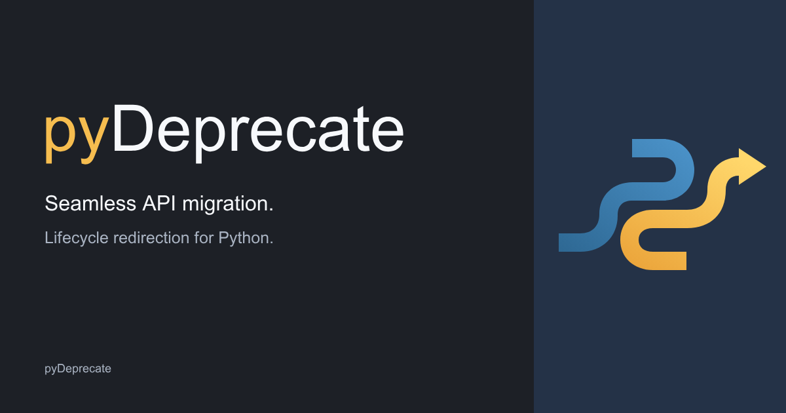
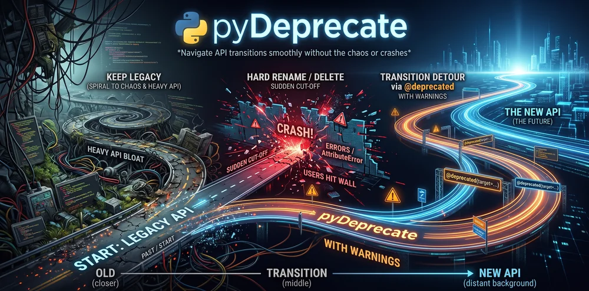

Brand🔗
The pyDeprecate mark is a blue route that turns into a gold arrow: the old API path redirecting to the new one.
Logo🔗


Use the light logo on light backgrounds and the dark logo on dark backgrounds: logo-light.svg, logo-dark.svg.


Mark🔗
The icon-only mark works on both light and dark backgrounds: mark.svg.

Banner🔗


banner-light.svg · banner-dark.svg


Icons and social card🔗
| Asset | File | Use |
|---|---|---|
| Favicon | favicon.svg |
Browser tab icon of this site |
| Apple touch icon | apple-touch-icon.png |
iOS home-screen icon |
| Avatar | avatar.svg |
Profile picture |
| Social card | social-preview.png · .svg |
Link previews (Open Graph, X/Twitter) |



Colors🔗
| Color | Hex | Use |
|---|---|---|
| Route blue | #2E6893 |
Mark, links, badge label |
| Redirect gold | #EAA238 |
Mark arrow, accent, badge message |
| Ink | #1B2330 |
Header, text on light backgrounds |
| Paper | #F7F9FC |
Light backgrounds |
Illustration🔗

Badge🔗
If your project uses pyDeprecate, let others know that it has a clear deprecation path: